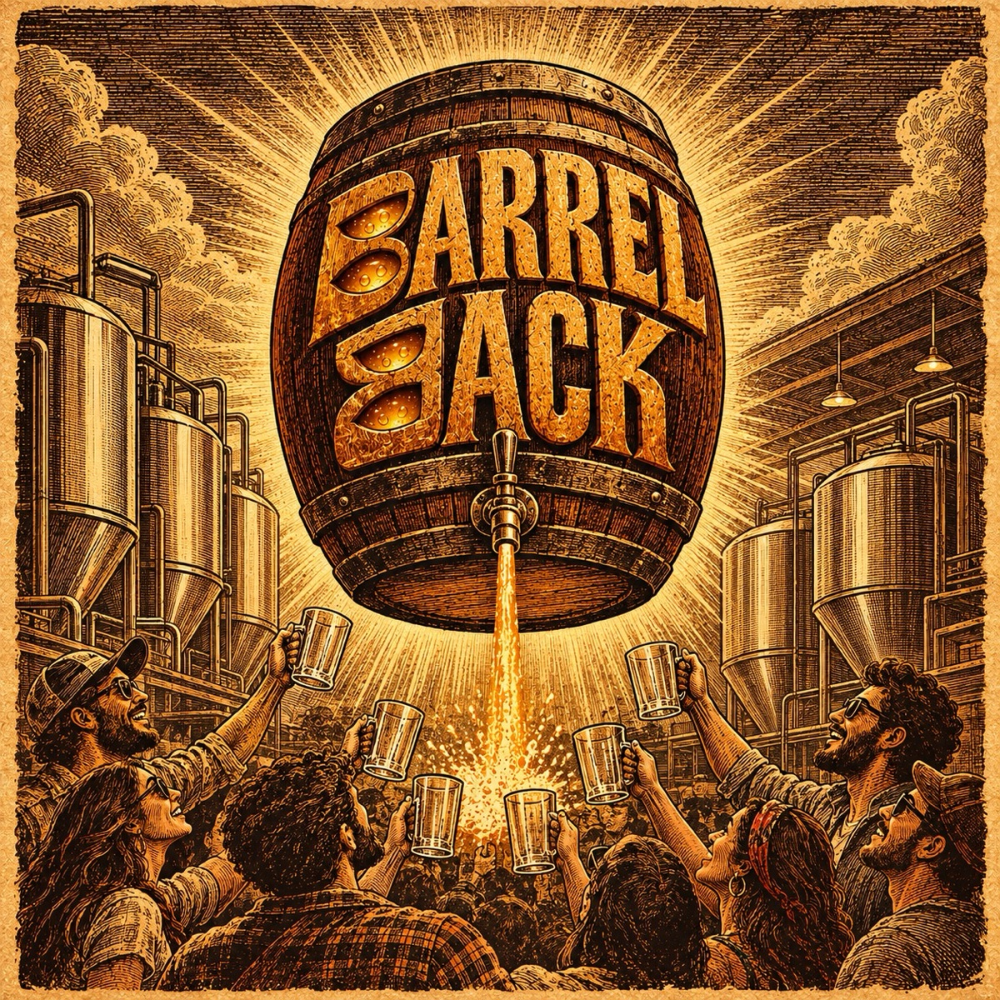

Bringing back a retired beer: nostalgia as a sales tool
A new beer has to earn attention from scratch. A retired one comes back with a story already attached and a group of people who want it. Handled well, a revival fills a tank and reminds your regulars why they came in the first place.


A comeback is a launch with the marketing already done
Every brewery that has been open five years has a beer people still ask about. That question is free market research.
Picture a taproom regular, years after a beer left the board, asking the server whether it is ever coming back. Nobody asks that about a beer they did not care about. Revivals work because the demand is already there and the story writes itself. Reported in The New Brewer, the Brewers Association's journal: one revival batch of 80 barrels, about 94 hl, sold out before it was even brewed, with more than 4,000 people on the waiting list.
The memory tastes better than the beer did
Nostalgia is generous. People remember the evening, the friends and the rain outside. They credit all of it to the beer. Brew the old recipe exactly and some will say it is not how they remember it.
That means recipe recovery comes first. Pull the original brew sheets: malt bill, hop varieties and weights, yeast strain, fermentation temperature. Then check what has changed. A hop variety may now be scarce, an imported malt may come from a different maltster and your brewhouse may be a new one. On a 5 hl batch, small swaps add up, so brew a test batch and taste it with two or three people who drank the original.
Aim for the beer people remember, within reason. Be honest if it has been updated.
Write every change on the new brew sheet with the reason beside it. If the revival becomes a regular, that record is what lets the next brewer make it the same way, which is exactly what went missing the first time.
Make it scarce, then count the kegs
A revival works best as a limited run. Scarcity is what turns curiosity into a visit.
Work out the volume before you announce it. A 5 hl batch is 500 litres. Allow about 5% for losses in transfer and tank bottoms and you have about 475 litres to sell. In 30 litre kegs that is 15 full kegs and a part keg, or about 1,190 pours of 400 ml. If your taproom pours 150 glasses of a popular beer on a busy weekend day, the run lasts a few weekends, which is about right.
Announce the date, take names on a list and tell people when it is gone. A beer that sells out is a story. A beer that lingers on the board for two months is just another tap.
Keep the old look, mark the return
The old artwork is part of the memory, so use it. Add a clear mark that this is a return, such as a year or a short line like "back for one batch". Do not redesign it into something the regulars will not recognise. Our guide to beer label design covers what to keep and what to change.
If the beer goes into bottles or cans, its label may need fresh approval from the state excise department, even if it was approved years ago. Rules and timelines vary by state and change, so check before you print and start early.
Nostalgia has to reach people who never drank it
The regulars who remember the beer may be ten years older now. Younger drinkers have no memory to trigger, so tell them the story: why it was brewed, why it was retired and why it is back.
Give them a reason to care in the present, such as a tasting night where old regulars and new faces drink it together. Craft brewing in India is young enough that a beer from 2016 already counts as history. Our guide to brand storytelling shows how to tell it without inventing anything.
Know what success looks like before you brew
It depends on what you want from the revival. If you want footfall, count visits and new names on the list. If you want a permanent return, set a bar in advance: for example, if the beer sells out within four weekends and at least a third of buyers ask for it again, it earns a second batch.
Your first step: ask your servers which retired beer customers mention most, then find its brew sheet.
Common questions
Why do retired beers sell so well when they return?
The demand already exists. People remember the beer and the moments around it. A limited return gives them a reason to visit now rather than later.
Should I change the recipe of a revived beer?
Only where ingredients or equipment force it. Brew a test batch and taste it with people who knew the original. Say so if you have updated it.
How big should a revival batch be?
Small enough to sell out within a few weekends. For many Indian taprooms that means a single batch of 5 to 10 hl.
Do I need new label approval to bring back a packaged beer?
Often, yes. Label rules vary by state and change, so check with your excise department or a licensing consultant before printing.